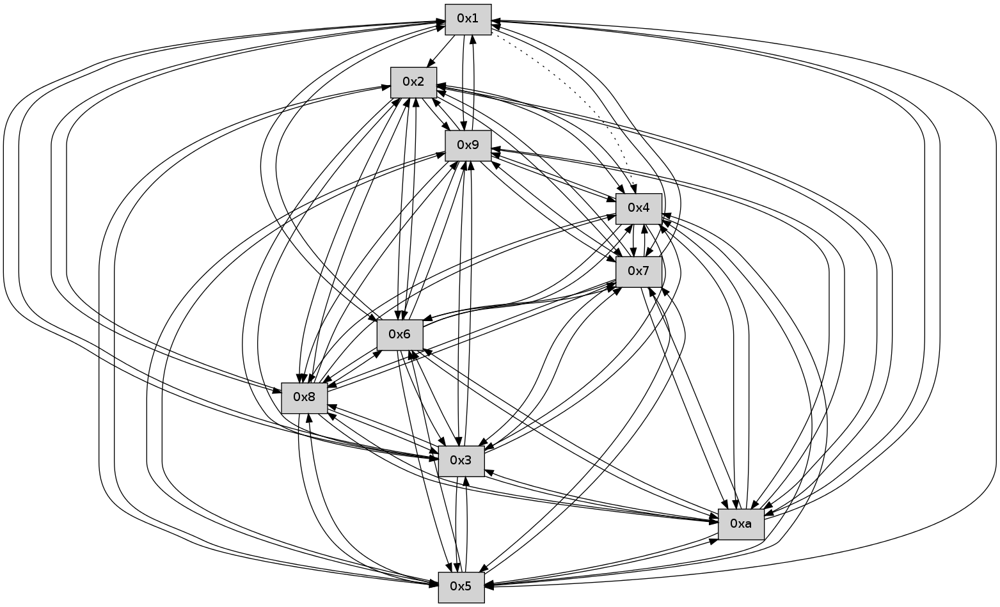

>> << IDX [start] -100 -25 -5 +0 +5 +25 +100 [320.409562111]
 Previous packets
315.001399 [Hello(10): seq=137 sym=6,3,2,5,9,8,7,4,1 sysInfo= stat=6:10,0,0,0/3:15,0,0,0/2:10,0,0,0/5:8,0,0,0/9:10,0,0,0/8:4,0,0,0/7:0,0,0,0/4:6,0,0,0/1:15,0,0,0]
315.003976 [Hello(6): seq=205 sym=2,3,5,4,7,9,8,10,1 sysInfo= stat=2:0,0,0,0/3:13,0,0,0/5:1,0,0,0/4:1,0,0,0/7:5,0,0,0/9:11,0,0,0/8:13,0,0,0/10:12,0,0,0/1:8,0,0,0]
315.007804 [Hello(7): seq=205 sym=2,3,5,6,4,8,9,10,1 sysInfo= stat=2:12,0,0,0/3:11,0,0,0/5:4,0,0,0/6:0,0,0,0/4:6,0,0,0/8:8,0,0,0/9:10,0,0,0/10:7,0,0,0/1:5,0,0,0]
----------------------------------------------------------------------
315.680768 beacon01(faad) #0 coord=01,02,03,04,05,06,07,0a,09,08 cycle=688.0ms assoc
-- color-indic=0 64 27 99
315.690751 beacon02(faad) #0 coord=01,02,03,04,05,06,07,0a,09,08 cycle=688.0ms assoc 64 b4 a8
315.700751 beacon03(faad) #0 coord=01,02,03,04,05,06,07,0a,09,08 cycle=688.0ms assoc 64 ce e5
315.710751 beacon04(faad) #0 coord=01,02,03,04,05,06,07,0a,09,08 cycle=688.0ms assoc 64 b9 0f
315.720752 beacon05(faad) #0 coord=01,02,03,04,05,06,07,0a,09,08 cycle=688.0ms assoc 64 c3 42
315.730750 beacon06(faad) #0 coord=01,02,03,04,05,06,07,0a,09,08 cycle=688.0ms assoc 64 4d 95
315.740751 beacon07(faad) #0 coord=01,02,03,04,05,06,07,0a,09,08 cycle=688.0ms assoc 64 37 d8
315.750756 beacon0a(faad) #0 coord=01,02,03,04,05,06,07,0a,09,08 cycle=688.0ms assoc 64 46 d3
315.760756 beacon09(faad) #0 coord=01,02,03,04,05,06,07,0a,09,08 cycle=688.0ms assoc 64 c8 04
315.770756 beacon08(faad) #0 coord=01,02,03,04,05,06,07,0a,09,08 cycle=688.0ms assoc 64 b2 49
315.782211 [Hello(2): seq=203 sym=4,5,7,6,3,9,8,10 sysInfo= stat=4:5,0,0,0/5:9,0,0,0/7:3,0,0,0/6:14,0,0,0/3:14,0,0,0/9:2,0,0,0/8:15,0,0,0/10:13,0,0,0]
315.784599 [Hello(5): seq=206 sym=7,6,4,3,9,8,10,2 sysInfo= stat=7:9,0,0,0/6:1,0,0,0/4:7,0,0,0/3:6,0,0,0/9:5,0,0,0/8:11,0,0,0/10:15,0,0,0/2:8,0,0,0]
315.788426 [Hello(4): seq=206 sym=5,7,6,2,3,9,8,10 sysInfo= stat=5:0,0,0,0/7:11,0,0,0/6:1,0,0,0/2:4,0,0,0/3:7,0,0,0/9:6,0,0,0/8:1,0,0,0/10:2,0,0,0]
315.794753 [Hello(3): seq=206 sym=7,6,2,4,8,9,10 sysInfo= stat=7:6,0,0,0/6:2,0,0,0/2:3,0,0,0/4:1,0,0,0/8:8,0,0,0/9:15,0,0,0/10:8,0,0,0]
----------------------------------------------------------------------
316.468903 beacon01(faad) #0 coord=01,02,03,04,05,06,07,0a,09,08 cycle=688.0ms assoc
-- color-indic=0 64 9b 9c
316.478886 beacon02(faad) #0 coord=01,02,03,04,05,06,07,0a,09,08 cycle=688.0ms assoc 64 08 ad
316.488885 beacon03(faad) #0 coord=01,02,03,04,05,06,07,0a,09,08 cycle=688.0ms assoc 64 72 e0
316.498885 beacon04(faad) #0 coord=01,02,03,04,05,06,07,0a,09,08 cycle=688.0ms assoc 64 05 0a
316.508885 beacon05(faad) #0 coord=01,02,03,04,05,06,07,0a,09,08 cycle=688.0ms assoc 64 7f 47
316.518885 beacon06(faad) #0 coord=01,02,03,04,05,06,07,0a,09,08 cycle=688.0ms assoc 64 f1 90
316.528887 beacon07(faad) #0 coord=01,02,03,04,05,06,07,0a,09,08 cycle=688.0ms assoc 64 8b dd
316.538890 beacon0a(faad) #0 coord=01,02,03,04,05,06,07,0a,09,08 cycle=688.0ms assoc 64 fa d6
316.548891 beacon09(faad) #0 coord=01,02,03,04,05,06,07,0a,09,08 cycle=688.0ms assoc 64 74 01
316.558892 beacon08(faad) #0 coord=01,02,03,04,05,06,07,0a,09,08 cycle=688.0ms assoc 64 0e 4c
316.573073 [Hello(10): seq=138 sym=6,3,2,5,9,8,7,4,1 sysInfo= stat=6:11,0,0,0/3:0,0,0,0/2:11,0,0,0/5:9,0,0,0/9:10,0,0,0/8:4,0,0,0/7:1,0,0,0/4:6,0,0,0/1:0,0,0,0]
316.576514 [Hello(7): seq=206 sym=2,3,5,6,4,8,9,10,1 sysInfo= stat=2:13,0,0,0/3:12,0,0,0/5:5,0,0,0/6:0,0,0,0/4:6,0,0,0/8:8,0,0,0/9:10,0,0,0/10:7,0,0,0/1:6,0,0,0]
316.579423 [Hello(8): seq=149 sym=5,2,3,4,7,6,9,10,1 sysInfo= stat=5:13,0,0,0/2:15,0,0,0/3:13,0,0,0/4:2,0,0,0/7:12,0,0,0/6:0,0,0,0/9:0,0,0,0/10:2,0,0,0/1:8,0,0,0]
----------------------------------------------------------------------
317.257035 beacon01(faad) #0 coord=01,02,03,04,05,06,07,0a,09,08 cycle=688.0ms assoc
-- color-indic=0 64 af 84
317.267018 beacon02(faad) #0 coord=01,02,03,04,05,06,07,0a,09,08 cycle=688.0ms assoc 64 3c b5
317.277017 beacon03(faad) #0 coord=01,02,03,04,05,06,07,0a,09,08 cycle=688.0ms assoc 64 46 f8
317.287018 beacon04(faad) #0 coord=01,02,03,04,05,06,07,0a,09,08 cycle=688.0ms assoc 64 31 12
317.297019 beacon05(faad) #0 coord=01,02,03,04,05,06,07,0a,09,08 cycle=688.0ms assoc 64 4b 5f
317.307020 beacon06(faad) #0 coord=01,02,03,04,05,06,07,0a,09,08 cycle=688.0ms assoc 64 c5 88
317.317019 beacon07(faad) #0 coord=01,02,03,04,05,06,07,0a,09,08 cycle=688.0ms assoc 64 bf c5
317.327023 beacon0a(faad) #0 coord=01,02,03,04,05,06,07,0a,09,08 cycle=688.0ms assoc 64 ce ce
317.337025 beacon09(faad) #0 coord=01,02,03,04,05,06,07,0a,09,08 cycle=688.0ms assoc 64 40 19
317.347023 beacon08(faad) #0 coord=01,02,03,04,05,06,07,0a,09,08 cycle=688.0ms assoc 64 3a 54
317.358150 [Hello(3): seq=207 sym=7,6,2,4,8,9,10 sysInfo= stat=7:7,0,0,0/6:3,0,0,0/2:3,0,0,0/4:1,0,0,0/8:9,0,0,0/9:15,0,0,0/10:9,0,0,0]
317.361855 [Hello(1): seq=115 sym=4,2,9,5,10,3,8,6,7 sysInfo= stat=4:5,0,0,0/2:4,0,0,0/9:13,0,0,0/5:6,0,0,0/10:0,0,0,0/3:0,0,0,0/8:13,0,0,0/6:2,0,0,0/7:7,0,0,0]
317.365484 [Hello(2): seq=204 sym=4,5,7,6,3,9,8,10 sysInfo= stat=4:5,0,0,0/5:10,0,0,0/7:4,0,0,0/6:15,0,0,0/3:15,0,0,0/9:2,0,0,0/8:0,0,0,0/10:14,0,0,0]
317.368680 [Hello(4): seq=207 sym=5,7,6,2,3,9,8,10 sysInfo= stat=5:0,0,0,0/7:12,0,0,0/6:1,0,0,0/2:4,0,0,0/3:8,0,0,0/9:7,0,0,0/8:2,0,0,0/10:3,0,0,0]
317.371996 [Hello(5): seq=207 sym=7,6,4,3,9,8,10,2 sysInfo= stat=7:10,0,0,0/6:1,0,0,0/4:7,0,0,0/3:7,0,0,0/9:6,0,0,0/8:12,0,0,0/10:0,0,0,0/2:8,0,0,0]
----------------------------------------------------------------------
318.045166 beacon01(faad) #0 coord=01,02,03,04,05,06,07,0a,09,08 cycle=688.0ms assoc
-- color-indic=0 64 13 81
318.055148 beacon02(faad) #0 coord=01,02,03,04,05,06,07,0a,09,08 cycle=688.0ms assoc 64 80 b0
318.065148 beacon03(faad) #0 coord=01,02,03,04,05,06,07,0a,09,08 cycle=688.0ms assoc 64 fa fd
318.075150 beacon04(faad) #0 coord=01,02,03,04,05,06,07,0a,09,08 cycle=688.0ms assoc 64 8d 17
318.085150 beacon05(faad) #0 coord=01,02,03,04,05,06,07,0a,09,08 cycle=688.0ms assoc 64 f7 5a
318.095149 beacon06(faad) #0 coord=01,02,03,04,05,06,07,0a,09,08 cycle=688.0ms assoc 64 79 8d
318.105150 beacon07(faad) #0 coord=01,02,03,04,05,06,07,0a,09,08 cycle=688.0ms assoc 64 03 c0
318.115153 beacon0a(faad) #0 coord=01,02,03,04,05,06,07,0a,09,08 cycle=688.0ms assoc 64 72 cb
318.125155 beacon09(faad) #0 coord=01,02,03,04,05,06,07,0a,09,08 cycle=688.0ms assoc 64 fc 1c
318.135153 beacon08(faad) #0 coord=01,02,03,04,05,06,07,0a,09,08 cycle=688.0ms assoc 64 86 51
318.146307 [Hello(8): seq=150 sym=5,2,3,4,7,6,9,10,1 sysInfo= stat=5:14,0,0,0/2:0,0,0,0/3:14,0,0,0/4:3,0,0,0/7:12,0,0,0/6:0,0,0,0/9:0,0,0,0/10:2,0,0,0/1:9,0,0,0]
318.150296 [Hello(10): seq=139 sym=6,3,2,5,9,8,7,4,1 sysInfo= stat=6:11,0,0,0/3:1,0,0,0/2:12,0,0,0/5:10,0,0,0/9:10,0,0,0/8:5,0,0,0/7:2,0,0,0/4:7,0,0,0/1:1,0,0,0]
318.154272 [Hello(9): seq=150 sym=5,2,3,4,7,6,8,10,1 sysInfo= stat=5:5,0,0,0/2:5,0,0,0/3:5,0,0,0/4:2,0,0,0/7:12,0,0,0/6:3,0,0,0/8:10,0,0,0/10:9,0,0,0/1:0,0,0,0]
318.157129 [Hello(7): seq=207 sym=2,3,5,6,4,8,9,10,1 sysInfo= stat=2:14,0,0,0/3:13,0,0,0/5:6,0,0,0/6:0,0,0,0/4:7,0,0,0/8:9,0,0,0/9:10,0,0,0/10:7,0,0,0/1:7,0,0,0]
318.160461 [Hello(6): seq=207 sym=2,3,5,4,7,9,8,10,1 sysInfo= stat=2:2,0,0,0/3:15,0,0,0/5:3,0,0,0/4:2,0,0,0/7:7,0,0,0/9:11,0,0,0/8:14,0,0,0/10:13,0,0,0/1:9,0,0,0]
----------------------------------------------------------------------
318.833299 beacon01(faad) #0 coord=01,02,03,04,05,06,07,0a,09,08 cycle=688.0ms assoc
-- color-indic=0 64 d7 8f
318.843282 beacon02(faad) #0 coord=01,02,03,04,05,06,07,0a,09,08 cycle=688.0ms assoc 64 44 be
318.853282 beacon03(faad) #0 coord=01,02,03,04,05,06,07,0a,09,08 cycle=688.0ms assoc 64 3e f3
318.863283 beacon04(faad) #0 coord=01,02,03,04,05,06,07,0a,09,08 cycle=688.0ms assoc 64 49 19
318.873281 beacon05(faad) #0 coord=01,02,03,04,05,06,07,0a,09,08 cycle=688.0ms assoc 64 33 54
318.883283 beacon06(faad) #0 coord=01,02,03,04,05,06,07,0a,09,08 cycle=688.0ms assoc 64 bd 83
318.893283 beacon07(faad) #0 coord=01,02,03,04,05,06,07,0a,09,08 cycle=688.0ms assoc 64 c7 ce
318.903287 beacon0a(faad) #0 coord=01,02,03,04,05,06,07,0a,09,08 cycle=688.0ms assoc 64 b6 c5
318.913287 beacon09(faad) #0 coord=01,02,03,04,05,06,07,0a,09,08 cycle=688.0ms assoc 64 38 12
318.923288 beacon08(faad) #0 coord=01,02,03,04,05,06,07,0a,09,08 cycle=688.0ms assoc 64 42 5f
318.934425 [Hello(3): seq=208 sym=1,7,6,2,4,8,9,10,5 sysInfo= stat=1:0,0,0,0/7:8,0,0,0/6:4,0,0,0/2:4,0,0,0/4:2,0,0,0/8:10,0,0,0/9:0,0,0,0/10:10,0,0,0/5:0,0,0,0]
318.938407 [Hello(2): seq=205 sym=4,5,7,6,3,9,8,10 sysInfo= stat=4:6,0,0,0/5:11,0,0,0/7:5,0,0,0/6:0,0,0,0/3:15,0,0,0/9:3,0,0,0/8:1,0,0,0/10:15,0,0,0]
318.940927 [Hello(5): seq=208 sym=7,6,4,3,9,8,10,2 sysInfo= stat=7:11,0,0,0/6:2,0,0,0/4:7,0,0,0/3:7,0,0,0/9:7,0,0,0/8:13,0,0,0/10:1,0,0,0/2:8,0,0,0]
318.946628 [Hello(1): seq=116 sym=2,9,5,10,3,8,6,7 asym=4 sysInfo= stat=2:5,0,0,0/9:14,0,0,0/5:7,0,0,0/10:1,0,0,0/3:0,0,0,0/8:14,0,0,0/6:3,0,0,0/7:8,0,0,0/4:6,0,0,0]
318.949555 [Hello(4): seq=208 sym=5,7,6,2,3,9,8,10 sysInfo= stat=5:1,0,0,0/7:13,0,0,0/6:2,0,0,0/2:4,0,0,0/3:8,0,0,0/9:8,0,0,0/8:3,0,0,0/10:4,0,0,0]
----------------------------------------------------------------------
319.621430 beacon01(faad) #0 coord=01,02,03,04,05,06,07,0a,09,08 cycle=688.0ms assoc
-- color-indic=0 64 6b 8a
319.631412 beacon02(faad) #0 coord=01,02,03,04,05,06,07,0a,09,08 cycle=688.0ms assoc 64 f8 bb
319.641414 beacon03(faad) #0 coord=01,02,03,04,05,06,07,0a,09,08 cycle=688.0ms assoc 64 82 f6
319.651413 beacon04(faad) #0 coord=01,02,03,04,05,06,07,0a,09,08 cycle=688.0ms assoc 64 f5 1c
319.661413 beacon05(faad) #0 coord=01,02,03,04,05,06,07,0a,09,08 cycle=688.0ms assoc 64 8f 51
319.671413 beacon06(faad) #0 coord=01,02,03,04,05,06,07,0a,09,08 cycle=688.0ms assoc 64 01 86
319.681414 beacon07(faad) #0 coord=01,02,03,04,05,06,07,0a,09,08 cycle=688.0ms assoc 64 7b cb
319.691418 beacon0a(faad) #0 coord=01,02,03,04,05,06,07,0a,09,08 cycle=688.0ms assoc 64 0a c0
319.701418 beacon09(faad) #0 coord=01,02,03,04,05,06,07,0a,09,08 cycle=688.0ms assoc 64 84 17
319.711418 beacon08(faad) #0 coord=01,02,03,04,05,06,07,0a,09,08 cycle=688.0ms assoc 64 fe 5a
319.725916 [Hello(8): seq=151 sym=5,2,3,4,7,6,9,10,1 sysInfo= stat=5:15,0,0,0/2:1,0,0,0/3:15,0,0,0/4:4,0,0,0/7:13,0,0,0/6:1,0,0,0/9:1,0,0,0/10:3,0,0,0/1:10,0,0,0]
319.729114 [Hello(10): seq=140 sym=6,3,2,5,9,8,7,4,1 sysInfo= stat=6:12,0,0,0/3:2,0,0,0/2:13,0,0,0/5:11,0,0,0/9:11,0,0,0/8:5,0,0,0/7:3,0,0,0/4:8,0,0,0/1:2,0,0,0]
319.733531 [Hello(7): seq=208 sym=2,3,5,6,4,8,9,10,1 sysInfo= stat=2:15,0,0,0/3:14,0,0,0/5:7,0,0,0/6:1,0,0,0/4:8,0,0,0/8:9,0,0,0/9:10,0,0,0/10:7,0,0,0/1:8,0,0,0]